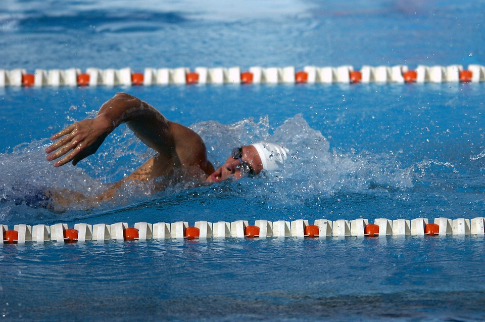
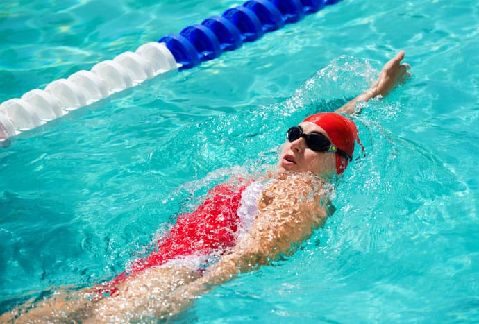

Swim Strokes
Here are summaries of each stroke and how to swim them.
Freestyle
The most commonly known stroke is the freestyle. While this is the only stroke of the three that is swum flat on your stomach, this is the most efficient. Using a flutter kick, the swimmer will “crawl” forward with their arms and bring them back in an s-shaped motion. Even though this stroke is used in the fastest swimming events, distance swimmers also prefer to swim freestyle because of how efficient it is.
Backstroke
What’s the worst part about floating on your back in a pool? You aren’t going anywhere! The backstroke, like the breaststroke, mainly keeps the swimmer’s head above water which makes breathing patterns easy to learn. After the swimmer learns proper balance, there’s no holding your breath and water won’t get up your nose. So, while your arms are moving in a windmill and your feet in doing a simple flutter kick, you can breathe easy and glide across the top of the water.
Breastroke

This may be the simplest motion in the swimming world. The swimmers’ arms and legs are making the exact same action, so it is an easy stroke to start learning. While the breaststroke may not be the most efficient, it can keep the swimmer’s head above water for excellent visibility making this a great stroke for any level swimmer. To kick, start from the core position, and rotate your ankles so that your feet are pointed out from your body. Then, bring your heels toward your butt. At the same time, bend your ankles up toward your shins. Extend your knees slightly past the width of your shoulders. Keep your ankles angled up relative to the leg. Extend your legs straight back behind you and bring them back together. Flick your ankles down when you reach the end of the extension. Do the same thing with your arms. When you bring them in take a breath.
Butterfly

The key is to stay low and breathe forward. The second kick is critical to drive the body forward. The hand entry should be at shoulder width or just wider. The most important part of the hand entry is being controlled so that you don’t create a lot of splash upon entering the water. Next you need to focus on pushing the water back and initiating an early vertical forearm with your palms, forearm and rest of your arms. The pull pattern is dictated by how deep someone presses their chest and body. The pull’s finish sets the arms up for the recovery. This sweeping recovery should be controlled. There are Two kicks, equal in power and size. The 2nd kick (at exit) is the kick most often missed because the knees never bend to set it up drive the knee downward (otherwise feet exit water).